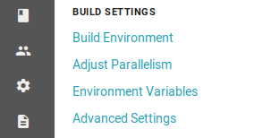

index
Table of Contents
- 1. Инструменты
- 2. Создаем новый проект
- 2.1. На гитхабе
- 2.2. Локально
- 2.2.1. Создаем директорию $GOPATH/src/github.com/yourgitname/yourproject и переходим в неё.
- 2.2.2. Со страницы QuickSetup git'a копируем команды, но не забываем добавить "git add .":
- 2.2.3. Ошибка команды git push
- 2.2.4. Генерируем ssh
- 2.2.5. Привязываем ssh к github
- 2.2.6. Повторяем git push, если В ПЕРВЫЙ РАЗ НЕ ПОЛУЧИЛОСЬ
- 3. Наполняем проект
- 4. HEROKU.com
- 5. CIRCLECI.com
- 6. CONFIGS
- 7. LAST STEPS
Если ты не видишь эту надпись, значит, твой deploy не удался

Привет, %username%. Сегодня мы – следуя этому мануалу – задеплоим на хероку контейнер с этим мануалом. Такая вот рекурсия.
Отдохни, сделай кофе.
Приготовься.
Глубокий вдох.
Готов?
1 Инструменты
1.1 Linux
- Эмулятор терминала
1.2 Windows
- Git bash
ПОЕХАЛИ!
2 Создаем новый проект
2.1 На гитхабе
2.1.1 На github.com создаем новый репозиторий. Обзываем его именем вашего проекта.


2.1.2 Жмем Create

2.1.3 Попадаем на страницу QuickSetup, можно её пока оставить - там инструкции для инициализации локального проекта.
2.2 Локально
2.2.1 Создаем директорию $GOPATH/src/github.com/yourgitname/yourproject и переходим в неё.
В моем случае это:
mkdir ~/go/src/github.com/gefracto/go-manual
cd ~/go/src/github.com/gefracto/go-manual
2.2.2 Со страницы QuickSetup git'a копируем команды, но не забываем добавить "git add .":
git init
git add .
git commit -m "first commit"
git remote add origin git@github.com:gefracto/go-manual.git
git push -u origin master


2.2.3 Ошибка команды git push
Возможно, ты увидишь такое же сообщение.
fatal: cannot run ssh: Нет такого файла или каталога fatal: unable to fork
Оно говорит о том, что нам нужно сгенерить ssh-key.
Даже если тебе удалось запушить, все равно выполни этот шаг - ssh-key нам ещё пригодится.
2.2.4 Генерируем ssh
Выполняем в терминале:
ssh-keygen -t rsa -b 4096 -C "gefracto@circleci.com"

Заметь, что команда заканчивается комментарием "-C "gefracto@circleci.com"". До символа @ - это твой git-логин. В дальнейшем этот комментарий понадобится нам для деплоинга на хероку.
2.2.5 Привязываем ssh к github
- Выполняем в консоли:
cat ~/.ssh/id_rsa.pub
Делаем ctrl+C этого мусора и идем на github.com.
- Переходим в настройки нашего репозитория, находим пункт Deploy keys

- Тыцаем "Add deploy key"
- В поле title вводим имя любимого кота или название проекта. Без разницы.
- В поле key вставляем скопированный ssh-мусор
- Не забываем отметить галочкой "Allow write access"


2.2.6 Повторяем git push, если В ПЕРВЫЙ РАЗ НЕ ПОЛУЧИЛОСЬ

git push -u origin master

УСПЕХ! Репозиторий создан. Можем теперь написать что-то на Go, а именно: простую программу, которая отдает static этого мануала.
3 Наполняем проект
3.1 Static этого мануала
Ты можешь написать свой static, но я рекомендую использовать заготовленный мною.
- Скачай этот zip-файл , предварительно отключив антивирус (шутка), и распакуй в корень своего пустого проекта.
- Создай в корне проекта файл main.go и скопипасть в него следующий текст:
package main import ( "net/http" "os" ) func main() { fileserver := http.FileServer(http.Dir("static")) http.Handle("/", fileserver) http.ListenAndServe(":"+os.Getenv("PORT"), nil) }
После этих манипуляций корневая директория проекта выглядит так:
Делаем пуш:
git commit -am "my project" git push -u origin masterТеперь приступаем к самому захватывающему – настройке CircleCi и Heroku
4 HEROKU.com
- Логинимся на heroku.
- Логинимся с помощью git-аккаунта
- Идем в раздел projects
- Идем в список своих проектов https://dashboard.heroku.com/apps
- Добавляем новое приложение (Create new app)
- Пишем имя своего проекта, либо любое другое, и жмакаем "Create App"
- Идем в настройки аккаунта (Account Settings)
- Добавляем новый ssh-key, который нужен для взаимодействия с CircleCI.

Напомню, что мы берем ssh, который создали ранее для привязки к git аккаунту. Получить его можно командой:
cat ~/.ssh/id_rsa.pub
- Save Changes
Забудем про HEROKU.
Он нам больше не нужен.
Почти.
5 CIRCLECI.com
- Логинимся с помощью git-аккаунта
- В меню выбираем Projects, кликаем свой git-аккаунт
- Жмем кнопку Add project
- Снова выбираем свой git, находим свой проект и тыкаем Setup project
- Выставляем параметры:
- OS: Linux
- Platform: 2.0
- Language: Go
- Начинаем билдить проект!
ОПАЧКИ! НЕУДАЧА :(
CircleCi не нашел в твоем проекте тестов. Ниче! Дадим ему то, чего он хочет!
- Создай в корне проекта файл main _test.go с таким содержимым:
package mainДа, это всё. Нам просто нечего тестировать.
- Обновим репозиторий
git add . git commit -m "main_test added" git push -u origin masterCircleCi узнал, что на git'e обновился репозиторий, и тут же начал новый билд. На этот раз - удачный.

Теперь мы должны подружить circleci с heroku. Выполним необходимые настройки.
- На главной circleci перейдем в настройки проекта, кликнув по шестеренке
- Добавим переменные окружения (Environment Variables)

Нужно добавить две переменные:
- Нажмем кнопочку Set User
Готово.
Теперь пишем конфиги.


6 CONFIGS
6.1 Procfile
Перво-наперво создадим в корне проекта файл с именем Procfile и напишем туда
web: go-manual
В твоем случае вместе "go-manual" должно быть имя директории, в которой лежит проект.
6.2 Dockerfile
Конечно же, в качестве контейнера мы будем использовать SCRATCH.
Он очень легкий и все такое.
Хотя, погоди…
Да, у меня не получилось оживить scratch. Мы будем использовать golang образ.
Создаем в корне проекта Dockerfile, пишем туда следующее:
FROM golang:onbuild COPY main / CMD ["/main"]
6.3 config.yml
Создаем в корне проекта каталог с именем ".circleci", в нем создаем файл "config.yml", куда пишем:
# Golang CircleCI 2.0 configuration file version: 2 jobs: build: docker: # specify the version - image: circleci/golang:1.8 working_directory: /go/src/github.com/gefracto/go-manual steps: - checkout - setup_remote_docker # specify any bash command here prefixed with `run: ` - run: mkdir TEST_RESULTS - run: go get github.com/jstemmer/go-junit-report - run: go get -v -t -d ./... - run: go test -v ./... - run: wget -qO- https://cli-assets.heroku.com/install-ubuntu.sh | sh - run: heroku login - run: git remote add heroku git@heroku.com:go-manual.git - run: CGO_ENABLED=0 GOOS=linux go build -a -installsuffix cgo -o main - run: docker build -t scratch -f Dockerfile . - run: heroku plugins:install heroku-container-registry - run: heroku container:login - run: heroku container:push web
В этом конфиге тебе нужно отредактировать две строчки:
working_directory: /go/src/github.com/gefracto/go-manual - run: git remote add heroku git@heroku.com:go-manual.git
Поменяй "go-manual" на свои значения.
7 LAST STEPS
Завершающий пуш:
git add .
git commit -m "I DID IT!"
git push -u origin master
Иди на circleci.com и смотри, как билдится твой проект.
Это продлится несколько минут.
Можно попить победного кофейку.
А по возвращению сходи по ссылке на свой проект. Найти ты его можешь тут.